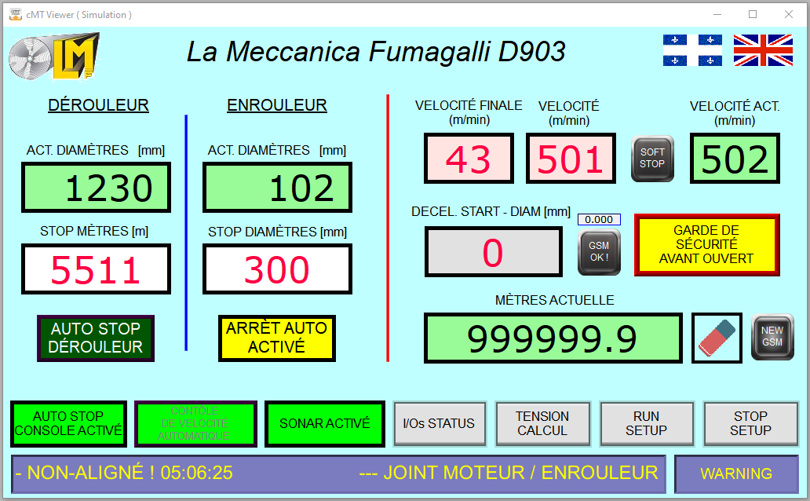
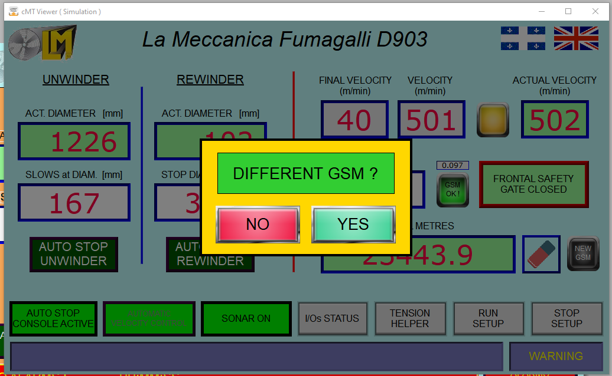
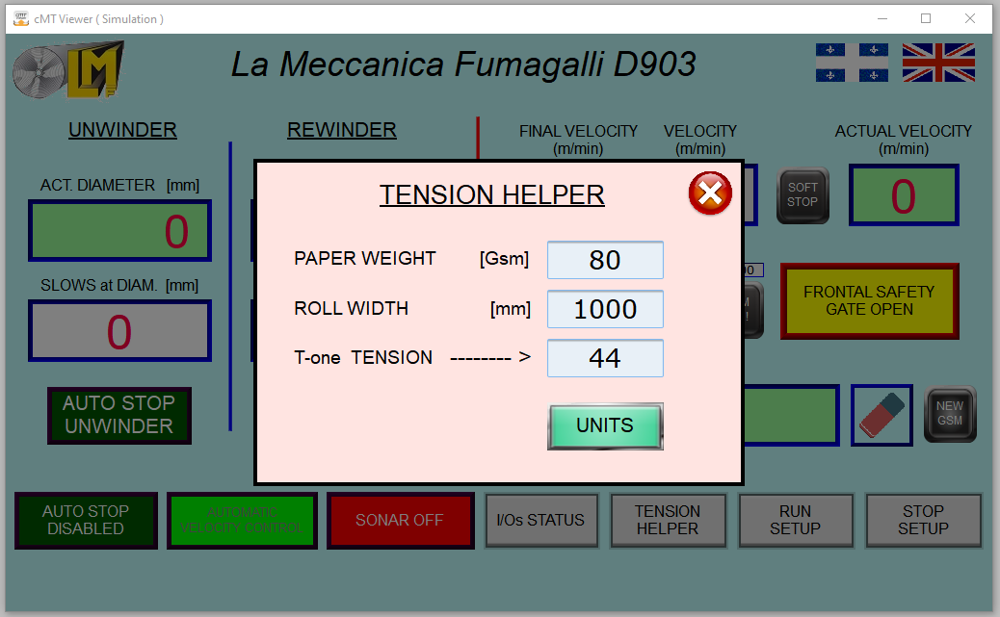
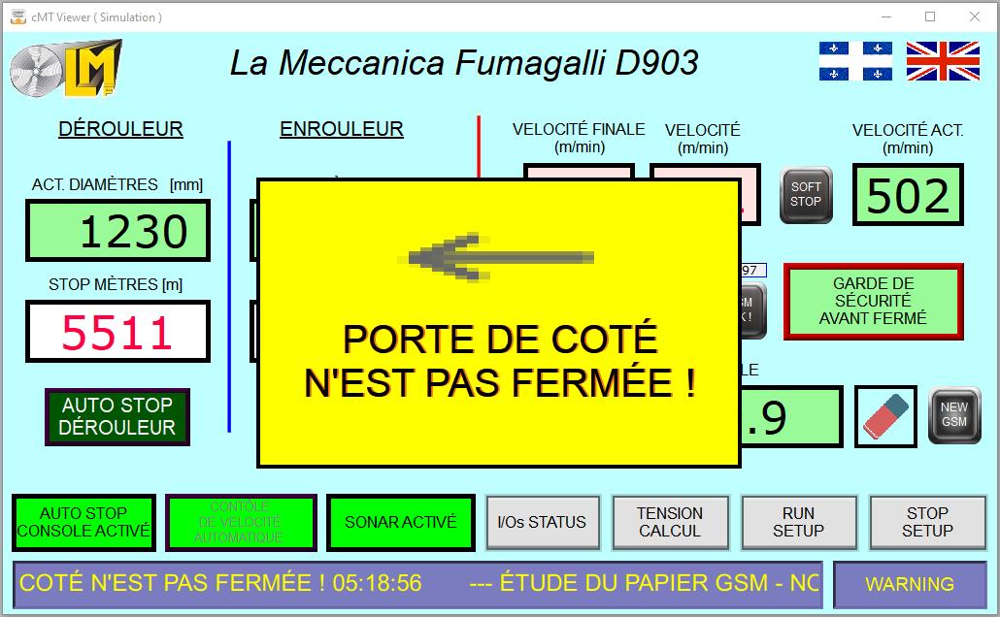
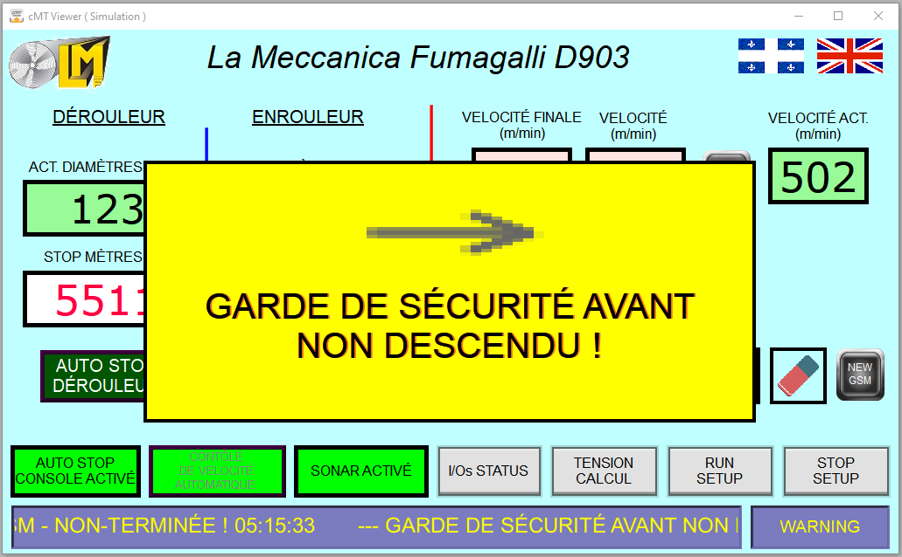
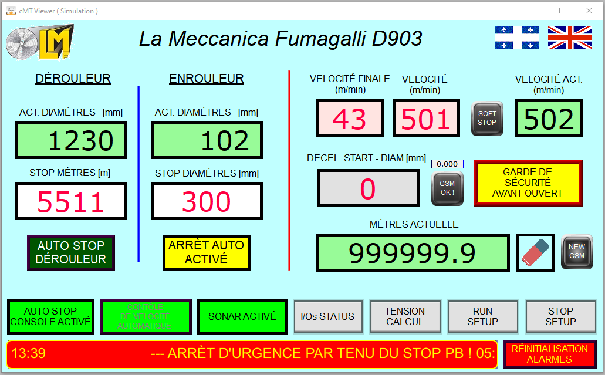
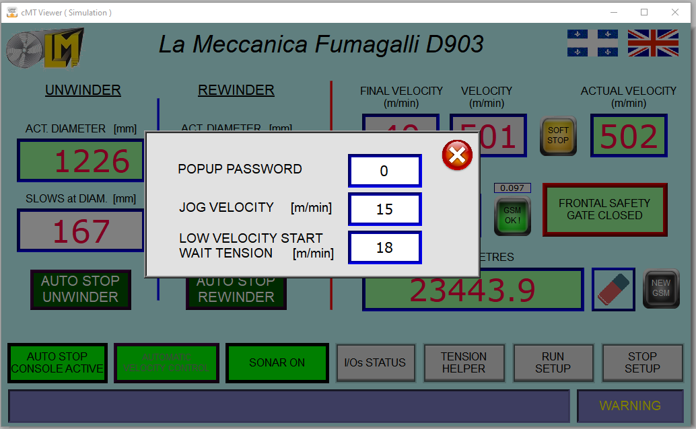
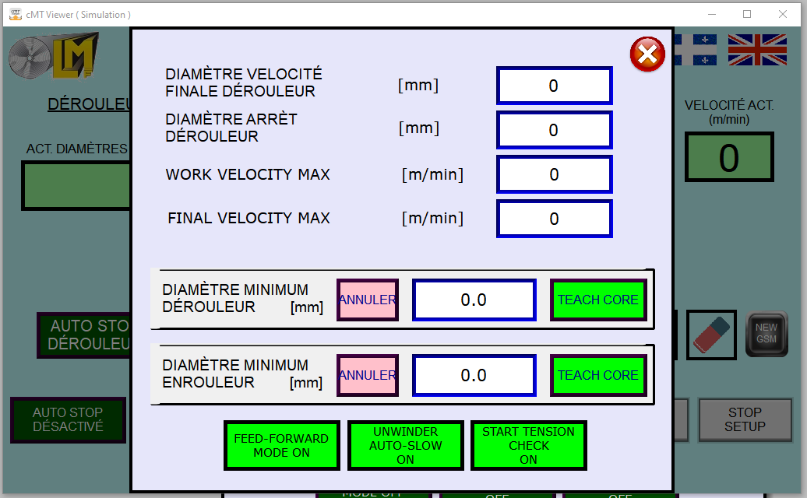
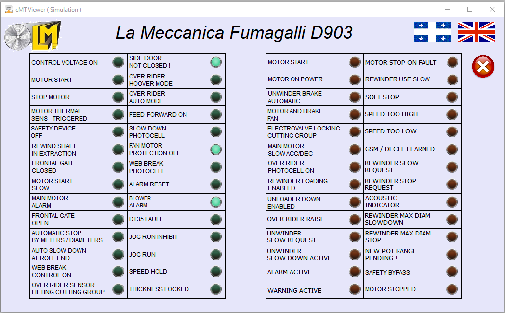

| Zone | Affichage / fonction |
|---|---|
| DÉROULEUR – ACT. DIAMÈTRES | Diamètre du rouleau dérouleur mesuré par le sonar (mm). |
| DÉROULEUR – deuxième champ | Change selon le mode (un seul champ à la fois) : • Sélecteur ARRÊT AUTO hors fonction : diamètre de ralentissement, puis diamètre d'arrêt une fois en ralentissement. • Sélecteur ARRÊT AUTO en fonction, AUTO dérouleur hors fonction : STOP MÈTRES – champ blanc, entrer les mètres. • AUTO dérouleur actif : STOP MÈTRES verrouillé (gris, non modifiable pendant le rouleau). |
| ENROULEUR – ACT. DIAMÈTRES | Diamètre du rouleau enroulé (laser DT35, mm). |
| ENROULEUR – STOP DIAMÈTRES | Diamètre cible de l'arrêt auto enrouleur. Modifiable seulement avec le sélecteur ARRÊT AUTO en fonction et l'AUTO enrouleur hors fonction. |
| AUTO STOP DÉROULEUR / ENROULEUR | Arme l'arrêt automatique (jaune « ARRÊT AUTO ACTIVÉ »). Seulement avec le sélecteur ARRÊT AUTO en fonction. Un seul à la fois. |
| VÉLOCITÉ FINALE / VÉLOCITÉ | Vitesses réglées par les deux potentiomètres : vitesse finale (lente) et vitesse de travail (m/min). |
| VÉLOCITÉ ACT. | Vitesse réelle du papier, mesurée par l'encodeur (m/min). |
| SOFT STOP (bouton-voyant) | Allumé pendant un arrêt doux. |
| DECEL. START – DIAM | Enrouleur : diamètre où le ralentissement commencera. |
| GSM OK ! (+ petite valeur) | Vert quand l'épaisseur du papier est apprise ; la petite valeur est l'épaisseur apprise (mm). |
| GARDE DE SÉCURITÉ AVANT | Vert = fermée, jaune = ouverte. |
| MÈTRES ACTUELLE + gomme | Compteur de mètres. Gomme = remise à zéro (machine arrêtée). |
| NEW GSM | Maintenir 3 s : oublier l'épaisseur apprise (nouveau papier). |
| AUTO STOP CONSOLE ACTIVÉ / DÉSACTIVÉ | État du sélecteur ARRÊT AUTO du pupitre (12SA5). |
| CONTRÔLE DE VÉLOCITÉ AUTOMATIQUE | Vert = contrôle automatique de la vitesse (normal). Ne pas passer en manuel sans instruction. |
| SONAR ACTIVÉ / DÉSACTIVÉ | Mesure du diamètre dérouleur. Doit être ACTIVÉ en production. |
| I/Os STATUS · TENSION CALCUL · RUN SETUP · STOP SETUP | Autres pages (§7, §10, §11). |
| Barre du bas + WARNING / RÉINITIALISATION ALARMES | Les messages défilent dans la barre (bleu = avertissement, rouge = alarme). Le bouton de droite réinitialise / coupe le buzzer (§9). |
| Action | Résultat |
|---|---|
| STOP appuyé une fois | Arrêt doux : rampe de descente douce, voyant SOFT STOP allumé. |
| STOP appuyé une 2e fois, ou maintenu 1 s | Arrêt immédiat (rampe du variateur). |
| STOP maintenu 2 s | Arrêt immédiat + message rouge « Arrêt d'urgence par tenu du STOP PB » – appuyer sur RÉINITIALISATION ALARMES. |
| START pendant un arrêt doux | La vitesse est maintenue (le voyant START clignote). START à nouveau = retour à la vitesse de travail. |
| Porte de côté ouverte en marche | Arrêt doux ; le START ne peut pas l'annuler tant que la porte est ouverte. |
Boutons d'arrêt d'urgence : arrêt immédiat de tout (message rouge « Arrêt d'urgence »). Déverrouiller le bouton, remettre les auxiliaires, appuyer sur RÉINITIALISATION ALARMES.
La machine peut ralentir et s'arrêter seule à un nombre de mètres (dérouleur) ou à un diamètre enrouleur.
| Situation | Que faire |
|---|---|
| Message « Arrêt auto refusé – dérouleur » : mètres déjà atteints | Remettre le compteur à zéro (gomme) ou entrer plus de STOP MÈTRES, puis réarmer. |
| Message « Arrêt auto refusé – enrouleur » : rouleau déjà ≥ cible | Entrer un STOP DIAMÈTRES plus grand ou mettre un nouveau mandrin, puis réarmer. |
| Sélecteur ARRÊT AUTO mis hors fonction | Les deux boutons AUTO se désactivent ; la colonne dérouleur affiche de nouveau les diamètres. |



| START | JOG | En marche | |
|---|---|---|---|
| Garde avant ouverte | refusé + message | permis (passage du papier) | arrêt de sécurité |
| Porte de côté ouverte | refusé + message | refusé + message | arrêt doux (JOG : arrêt immédiat) |
| Pas de papier à la cellule de casse | refusé + alarme « Casse papier » | permis | arrêt + alarme « Casse papier » |
Fermer la garde / la porte, puis appuyer sur RÉINITIALISATION ALARMES pour effacer le message.

Alarme (barre rouge, buzzer intermittent, voyant clignotant) : il faut éliminer la cause. RÉINITIALISATION ALARMES coupe le buzzer 1 minute et efface l'alarme une fois la cause disparue.
Avertissement (barre bleue, un bip court, voyant fixe) : information, la machine continue sauf indication contraire.
| # | Message | Type | Que faire |
|---|---|---|---|
| 1 | Thermique ventilateur moteur | Alarme | Appeler la maintenance (ventilateur / relais thermique). Réinitialiser une fois réglé. |
| 2 | Défaut variateur | Alarme | Noter le code affiché sur le variateur, appeler la maintenance. |
| 3 | Arrêt d'urgence | Alarme | Déverrouiller l'arrêt d'urgence, remettre les auxiliaires, réinitialiser. |
| 4 | Thermique moteur | Alarme | Laisser refroidir le moteur ; appeler la maintenance si cela se répète. |
| 5 | Garde avant en mouvement | Avert. | Garde entre ouverte et fermée – terminer le mouvement. |
| 6 | Casse papier / pas de papier | Alarme | Repasser le papier (JOG), réinitialiser. |
| 7 | Thermique ventilateur aspiration | Alarme | Appeler la maintenance. |
| 8 | Encodeur arrêté | Alarme | Le rouleau de mesure ne tourne pas : vérifier la roue de l'encodeur sur le papier. |
| 9 | Non aligné – joint moteur / enrouleur | Alarme | Moyeu en position d'extraction : le remettre en place. |
| 10 | Défaut capteur diamètre enrouleur (DT35) | Alarme | Nettoyer le laser, vérifier que rien ne le bloque. Réinitialiser une fois réglé. |
| 11 | Diamètre maximum enrouleur | Alarme | Rouleau plein : décharger, réinitialiser. |
| 12 | Arrêt d'urgence par tenu du STOP PB | Alarme | STOP maintenu 2 s – réinitialiser. |
| 13 | Tension papier trop basse / mou | Avert. | Vérifier le passage du papier et le T-one. |
| 14 | Défaut capteur diamètre dérouleur (sonar) | Alarme | Nettoyer / vérifier le sonar, réinitialiser une fois réglé. |
| 15 | Rouleau dérouleur vide | Avert. | Charger un nouveau rouleau dérouleur. |
| 16 | Défaut d'apprentissage GSM | Avert. | Appuyer sur NEW GSM ; appeler le superviseur si cela se répète. |
| 17 | Étude du papier GSM non terminée | Avert. | Normal en début de rouleau ; si cela reste, NEW GSM. |
| 18 | Porte de côté n'est pas fermée | Avert. | Fermer la porte de côté, réinitialiser. |
| 19 | Garde de sécurité avant non descendue | Avert. | Descendre la garde, réinitialiser. |
| 20 | Arrêt auto terminé | Avert. | Information : rouleau terminé. |
| 21 | Arrêt auto refusé (dérouleur / enrouleur) | Avert. | Voir §5. |
Ces pages sont protégées par mot de passe. Ne modifier une valeur que si l'on connaît son effet.


| Réglage | Signification |
|---|---|
| Diamètre vélocité finale dérouleur | Diamètre dérouleur où commence le ralentissement à la vitesse finale (quand AUTO-SLOW est hors fonction). |
| Diamètre arrêt dérouleur | Diamètre minimum du rouleau dérouleur : la machine s'arrête à ce diamètre. |
| WORK / FINAL VELOCITY MAX | Pleine échelle des deux potentiomètres (prise en compte machine arrêtée). |
| Diamètre minimum + TEACH CORE / ANNULER | Avec un mandrin vide sur l'arbre et la machine arrêtée : entrer le diamètre du mandrin, appuyer sur TEACH CORE (2 s). ANNULER revient à la valeur précédente. |
| FEED-FORWARD MODE ON | Contrôle de vitesse normal (laisser ON). |
| UNWINDER AUTO-SLOW ON | Le point de ralentissement dérouleur suit la vitesse (laisser ON). |
| START TENSION CHECK ON | Attente de la tension T-one après le START (§7). |
